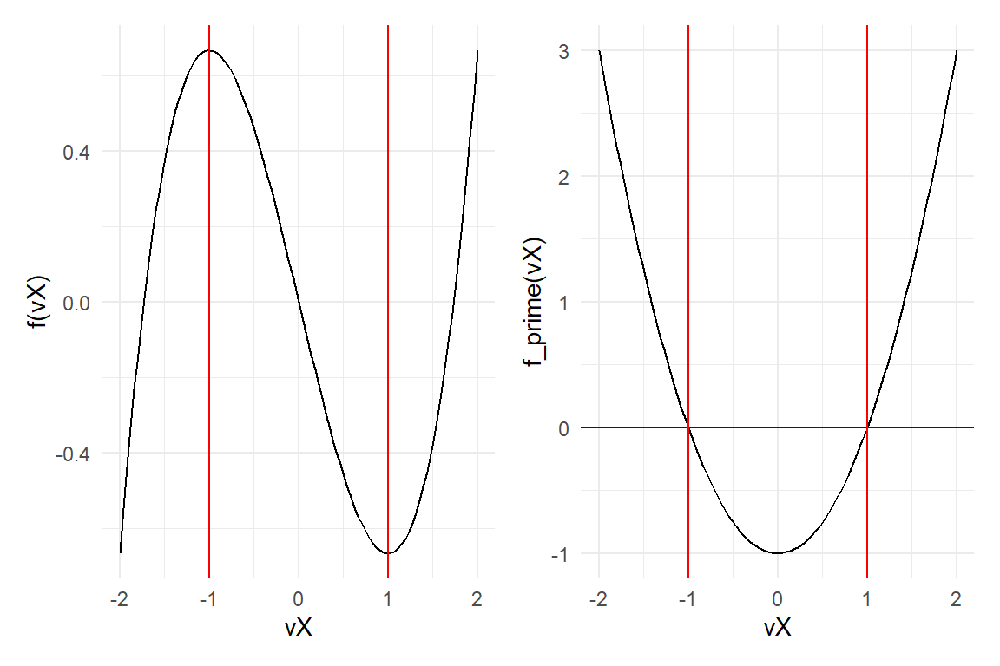

8 Numerical Optimization 1
8.1 Numerical vs Analytical Optimization
First, recall that any maximization problem can be converted into a minimization problem by multiplying the function by -1.
Most economic, econometric, and statistical problems can be solved by maximizing/minimizing an objective function.
Maximum likelihood estimation
GMM
Portfolio allocation
…
In some cases, the optimal points can be found analytically, but in most cases a closed form solution is not available. In these cases, we need numerical optimization methods.
8.1.1 Optimization and Root-finding
Root-finding and optimization are very closely related subjects which often occur in practical applications.
In fact, as you all know, optimizing a function, e.g., \(f(x)=\frac{x^3}{3}-x\) is equivalent to finding the roots of its derivative, \(f'(x)=x^2-1\).
Therefore, the methods used for numerical optimization are closely related to the numerical root-finding methods that were seen in the last lecture.
8.1.2 Maximum: Definition
In one dimension, we suppose that we have a function \(f : \mathbb{R} \rightarrow \mathbb{R}\) with continuous first and second derivatives.
The function \(f\) has a global maximum at \(x^*\) if \(f(x) \le f(x^*)\) for all \(x\).
The function \(f\) has a local maximum at \(x^*\) if \(f(x) \le f(x^*)\) for all \(x\) in a neighborhood of \(x^*\),
A necessary condition for \(x^*\) to be a local maximum of \(f\) is \(f'(x^*)=0\) and \(f''(x^*) \le 0\), a sufficient condition is \(f'(x^*)=0\) and \(f''(x^*)<0\).
8.1.3 Numerical optimization: local search techniques
Clearly, finding a local maximum is much easier than finding a global maximum.
All of the algorithms we consider for numerical optimization are local search techniques.
These algorithms work by generating a series of points, \(x_0\), \(x_1\), \(x_2\), \(\cdots\), which (hopefully, but not necessarily) converge to a local maximum of \(f\).
Given a prospective solution \(x_n\), we look for the next prospective solution \(x_{n+1}\) in some neighborhood of \(x_n\).
Because they never consider the whole space of possible solutions, local search techniques can only ever be guaranteed to find local maxima.
8.1.4 Numerical optimization: general structure
These search techniques are iterative procedures with the following general structure.
Chose a starting point, \(x_0\);
Check for optimality in \(x_0\);
A series of instructions to select another candidate of an optimal point;
Back to point 2 until an optimality criterion is satisfied;
Final point, \(x_N\), is an approximation of the local optimal point, \(x^*\), for the function \(f(\cdot)\).
A serach method is said to be globally convergent if it can reach a stationary point starting from any initial point. Otherwise, the method is said to be locally convergent.
8.1.5 Stopping criteria
All algorithms require a stopping ceriteria to avoid that the routines keep running forever. The purpose is:
Limit the number of iterations.
Obtain an accurate solution.
Typical stopping criteria are:
\(|x_n-x_{n-1}| \le \varepsilon\), with \(\varepsilon >0\);
\(|f(x_n)-f(x_{n-1})| \le \varepsilon\), with \(\varepsilon >0\);
\(|f(x_n)| \le \varepsilon\), with \(\varepsilon >0\);
Maximum number of iterations reached, \(n=n_{max}\).
If the sequence \(\{x_n\}_{n=1}^{\infty}\) converges to a local maximum, the criteria 1-3 will all be satisfied, but the converse is not necessarily true. Thus, even when a local search technique appears to converge, we may still need to check that the final solution really is a local maximum.
We may find that the algorithm does not converge at all; e.g., if \(f\) is unbounded then possibly \(x_n \rightarrow \infty\). This is the reason that we need to specify a maximum number of iterations \(n_{max}\).
8.2 The Newton-Raphson Method - and Method for Optimization.
As we saw last time, the Newton-Raphson method uses information on the function \(f\) and its derivative \(f'\). The original formulation of the NR method is intended to find the roots of a function, and it is based on the following recursive algorithm:
Define inputs: \(f(x), x_0, \varepsilon, n_{max}\). For \(n=0,1,...\) until stopping condition reached, do:
Compute \(f(x_n)\) and \(f'(x_n)\).
Compute \(x_{n+1}=x_n-\frac{f(x_n)}{f'(x_n)}\).
-
Stopping conditions:
If \(|f(x_n)| \le \varepsilon\) then set \(x_n=a\) and stop; algorithm converged.
If \(n=m_{max}\) then stop; maximum number of iterations has been reached, algorithm failed to converge.
8.2.1 Newton’s Method for Optimization
Since we deal with a problem of optimization, i.e., \(f'(x)=0\), Newton’s method for optimization replaces \(f(x)\) with \(f'(x)\) in the original Newton-Raphson method.
Hence, the \(n\)-th step in Newton’s method for optimization (for univariate functions) is:
\[ x_n = x_{n-1} - \frac{f'(x_{n-1})}{f''(x_{n-1})} \]
The Newton’s method is such that the convergence is local and quadratic, meaning that near the solution, the convergence is very fast!
The Newton’s method is really suitable when the first- and second-order information are readily and easily calculated.
8.2.2 Newton’s algorithm convergence
When the Newton algorithm converges, we can end up with a minimum, or indeed a ‘flat spot’, just as easily as a maximum.
The reason is that all such stationary points satisfy \(f'(x^*)=0\).
It can be shown that if:
\(x^*\) is a local maximum.
\(f'(x^*)=0\)
\(f''(x^*)<0\)
\(\exists k \in \mathbb{R} : |f''(x) - f''(y)| \le k|x-y| \forall (x,y) \in \mathbb{R}^2\) (that is, \(f''\) is Lipschitz-continuous) in a neighborhood of \(x^*\) then, provided that \(x_0\) is close enough to \(x^*\), \(x_n \rightarrow x^*\) quickly as \(n \rightarrow \infty\).
We will revisit Newton’s method later in higher dimensions.
8.2.3 Newton’s method: Example
Consider the function \(f(x)=2x(x-1)^2(x+2)\)
f <- function(dX) {
dOut <- 2 * dX * (dX - 1)^2 * (dX + 2)
return(dOut)
}with first derivative \(f'(x)=4-12x+8x^3\)
f_prime <- function(dX) {
dOut <- 4 - 12 * dX + 8 * dX^3
return(dOut)
}and second derivative \(f''(x)=24x^2-12\)
8.2.4 Newton’s method: implementation in R
NM <- function(f, f_prime, f_sec, dX0, dTol = 1e-9, n.max = 1000){
dX <- dX0
fx <- f(dX)
fpx <- f_prime(dX)
fsx <- f_sec(dX)
n <- 0
while ((abs(fpx) > dTol) && (n < n.max)) {
dX <- dX - fpx/fsx
fx <- f(dX)
fpx <- f_prime(dX)
fsx <- f_sec(dX)
n <- n + 1
cat("At iteration", n, "the value of x is:", dX, "\n")
}
if (n == n.max) {
cat('newton failed to converge\n')
} else {
return(dX)
}
}Example: starting point \(x_0 = -2\):
x1 <- NM(f, f_prime, f_second, dX0 = -2)
#> At iteration 1 the value of x is: -1.571429
#> At iteration 2 the value of x is: -1.398224
#> At iteration 3 the value of x is: -1.367014
#> At iteration 4 the value of x is: -1.366026
#> At iteration 5 the value of x is: -1.366025
vX <- seq(-2, 2, 0.1)
plot(vX, f(vX), type = "l")
abline(v=-2, col="blue") # initial guess
abline(v=-1.571429, lty=2) # first iteration
abline(v=-1.398224, lty=2) # second iteration
abline(v=-1.367014 , lty=2) # third iteration
abline(v=x1, col="red") # solutionExample: starting point \(x_0 = 1.5\):

Example: starting point \(x_0 = -0.4\):
8.2.5 Exercise
Find the local maximum and the local minimum of the function \(f(x)=x^3+(6-x)^2\) on the interval \([-5,5]\) using Newton’s method and the optimize function.
Plot the function to pick starting points for Newton’s method.
# Functions
fe1 <- function(dX) {
dOut <- dX^3 + (6-dX)^2
return(dOut)
}
feprime <- function(dX) {
dOut <- 3 * dX^2 - 2*(6-dX)
return(dOut)
}
fesecond <- function(dX) {
dOut <- 6 * dX + 2
return(dOut)
}
#Solution
xe1 <- NM(fe1, feprime, fesecond, dX0 = -1) # minimum
vX <- seq(-5, 5, 0.1)
plot(vX, fe1(vX), type = "l")
abline(v=-1, col="blue") # initial guess
abline(v=xe1, col="red") # solution
xe2 <- NM(fe1, feprime, fesecond, dX0 = 4) # maximum
vX <- seq(-5, 5, 0.1)
plot(vX, fe1(vX), type = "l")
abline(v=4, col="blue") # initial guess
abline(v=xe2, col="red") # solution8.3 The Golden-section method
The golden-section method works in one dimension only, but does not need \(f'\).
This method is similar to the root-bracketing technique for root-finding.
Let \(f : \mathbb{R} \rightarrow \mathbb{R}\) be a continuous function (note, that we do not assume that we have a derivative).
If we have two points \(x_l < x_r\) such that \(f(x_l)f(x_r) \le 0\) then we know that there is a root in the interval \([x_l, x_r]\).
To determine if we have a local maximum, we need three points: if \(x_l < x_m < x_r\) and \(f(x_l) \le f(x_m)\) and \(f(x_r) \le f(x_m)\) then there must be a local maximum in the interval \([x_l, x_r]\).
8.3.1 The idea of the Golden-section method
Start with \(x_l < x_m < x_r\) such that \(f(x_l) \le f(x_m)\) and \(f(x_r) \le f(x_m)\).
If \(x_r - x_l \le \varepsilon\) then stop; set \(x^*=x_m\).
If \(x_r - x_m > x_m - x_l\) then 2a.; otherwise do 2b.
2a) Choose a point \(y \in (x_m, x_r)\)
If \(f(y) \ge f(x_m)\) then the maximum is \((x_m,x_r)\) and we can redefine the interval: put \(x_l=x_m\) and \(x_m = y\);
Otherwise the maximum is in the interval \((x_l,y)\) and we can redefine the interval: \(x_r=y\).
2b) Choose a point \(y \in (x_l, x_m)\)
If \(f(y) \ge f(x_m)\) then the maximum is \((x_l,x_m)\) and we can redefine the interval: put \(x_r=x_m\) and \(x_m = y\);
Otherwise the maximum is in the interval \((y,x_r)\) and we can redefine the interval: \(x_l=y\).
- Go back to step 1.
8.3.2 The Golden ratio
Other than saying that \(y\) should be in the larger of the two intervals, \((x_l,x_m)\) and \((x_m,x_r)\), how do we specify \(y\)?
Suppose \((x_m,x_r)\) is the larger interval (as in the figure below), and let \(a=x_m-x_l\), \(b=x_r-x_m\), and \(c=y-x_m\).
[]
The golden-section algortihm chooses \(y\) such that the ratio of the lengths of the larger to the smaller interval stays the same at each iteration.
That is, if the new breacketing interval is \([x_l,y]\) then:
\[ \frac{a}{c} = \frac{b}{a} \]
While if the new bracketing interval is \([x_m,x_r]\) then:
\[ \frac{b-c}{c} = \frac{b}{a} \]
Setting \(\phi = \frac{b}{a}\) and using the two equations above to solve for \(\phi\) and we can find the famous golden ratio:
\[ \phi^2 - \phi - 1 = 0 \Rightarrow \phi = \frac{1+\sqrt{5}}{2} \approx 1.618 \]
We then solve for \(c\) using the second equation:
\[ \frac{b-c}{c} = \phi \Rightarrow c=b/(1+\phi) \]
Choose \(y\):
\[ y = x_m + \underbrace{c}_{y-x_m} + x_m + \underbrace{b}_{x_r-x_m} / (1+\phi) = x_m + (x_r - x_m)/(1+\phi) \]
An analogous argument applies if \((x_l,x_m)\) is the larger interval.
Using this method for choosing \(y\)gives the following version of the algorithm:
8.4 New algorithm
- Start with \(x_l < x_m < x_r\) such that \(f(x_l) \le f(x_m)\) and \(f(x_r) \le f(x_m)\).
- If \(x_r - x_l \le \varepsilon\) then stop; set \(x^*=x_m\).
- If \(x_r - x_m > x_m - x_l\) then 2.i; otherwise do 2.ii.
- Set \(y = x_m + (x_r-x_m)/(1+\phi)\). If \(f(y) \ge f(x_m)\) then put \(x_l=x_m\) and \(x_m = y\); otherwise put \(x_r = y\);
- Set \(y = x_m + (x_m-x_l)/(1+\phi)\). If \(f(y) \ge f(x_m)\) then put \(x_r=x_m\) and \(x_m = y\); otherwise put \(x_l = y\);
- Go back to step 1.
With \(\phi = \frac{1+\sqrt{5}}{2}\) being the famous golden ratio.
8.4.1 Notes
The length ratio of the new interval to the old is either \(b/(a+b)\) or \((a+c)/(a+b)\) (see figure to verify graphically), which both work out as \(\phi / (1+\phi)\).
That implies that if we start with \(x_m\) chosen so that the ratio \(\underbrace{(x_r-x_m)}_b / \underbrace{(x_m-x_l)}_a=\phi\) or \(1/\phi\) then at each iteration the width of the bracketing interval is reduced by a constant factor of \(\phi / (1+\phi)\) and so must eventually go to zero.
If you do not start with the ratio \((x_r-x_m) / (x_m-x_l)=\phi\) or \(1/\phi\) it is not a problem because as soon as you have an iteration that puts \(x_m=y\), this will be the case (by definition of how \(y\) is chosen).
Since \((x_r-x_l) \rightarrow 0\) as \(n \rightarrow \infty\), to stop the golden-section algorithm it is sufficient to specify a tolerance \(\varepsilon > 0\) then stop when \(x_r-x_l \le \varepsilon\).
8.4.2 The golden-section method: R implementation
gsection <- function(f, dX.l, dX.r, dX.m, dTol = 1e-9) {
# golden ratio plus one
dGR1 <- 1 + (1 + sqrt(5))/2
# successively refine x.l, x.r, and x.m
f.l <- f(dX.l)
f.r <- f(dX.r)
f.m <- f(dX.m)
while ((dX.r - dX.l) > dTol) {
if ((dX.r - dX.m) > (dX.m - dX.l)) { # if the right segment is wider than the left
dY <- dX.m + (dX.r - dX.m)/dGR1 # put Y into the right segment according to the golden ratio
f.y <- f(dY)
if (f.y >= f.m) {
dX.l <- dX.m
f.l <- f.m
dX.m <- dY
f.m <- f.y
} else {
dX.r <- dY
f.r <- f.y
}
} else { #if the left segment is wider than the right
dY <- dX.m - (dX.m - dX.l)/dGR1 # put Y into the left segment according to the golden ratio
f.y <- f(dY)
if (f.y >= f.m) {
dX.r <- dX.m
f.r <- f.m
dX.m <- dY
f.m <- f.y
} else {
dX.l <- dY
f.l <- f.y
}
}
}
return(dX.m)
}
gsection(f, dX.l = -1, dX.r = 1, dX.m = 0.5)
#> [1] 0.36602548.5 Optimization in R: univariate
In one dimension, R provides the function optimize, which uses a combination of the golden-section algorithm with a technique called parabolic interpolation.
Note that since maximum = FALSE, by default, optimize minimizes \(f\).
optimize(f, lower = -0.4, upper = 0.8, maximum = TRUE)
#> $maximum
#> [1] 0.3660215
#>
#> $objective
#> [1] 0.6961524For the example:
# Using built-in optimizer
optimize(fe1, lower = -5, upper = 5, maximum = TRUE) # maximum
#> $maximum
#> [1] -2.360919
#>
#> $objective
#> [1] 56.74535
optimize(fe1, lower = -5, upper = 5) # minimum
#> $minimum
#> [1] 1.694255
#>
#> $objective
#> [1] 23.4028
f2 <- function(x){-1*fe1(x)}
optimize(f2, lower = -5, upper = 5)
#> $minimum
#> [1] -2.360919
#>
#> $objective
#> [1] -56.74535